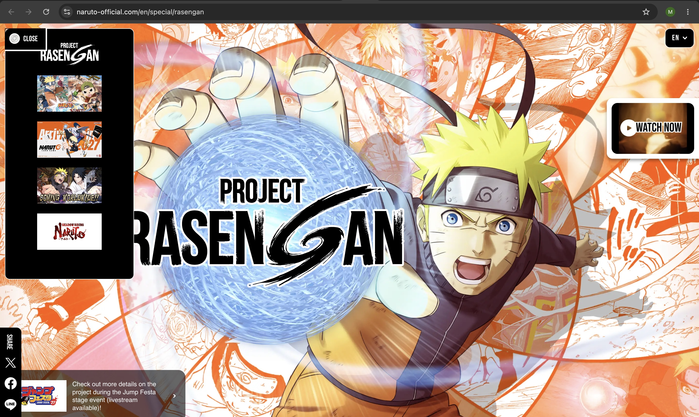

Website evaluation!
website url
name of website
- naruto official website
who is the target audience?
the target audience is people who are fans of the narto anime or fans of the boruto anime.
how is this site organized?
this site is organized using hierarchical organization because it has a well defined home page with a navigation menu that takes you to different sections and pages like upcoming news, anime, games, and manga.
what CRAP design principle does this site use?
this website uses the principle of contrast because it uses colors that are themed naruto to make the reader more interested, it also has images of narutos iconic moments that lures readers because it makes the website stand out and exciting.
what is the audit score
the accessibility score for the naruto official website is 84! when i ran the website through the accessibility checker it says that this website may be at risk of accessibility lawsuits.
what is the website effectivness
this website is very effective because if you are a naruto fan you have all naruto information all in one place at your disposal. you can find upcoming anime news, read manga, and read other content related the anime. this site makes it easy for users to find what they are looking for.
what is the sites efficiency?
the website is efficient because users can easily find whatever type of information, clips, and games they are looking for in the navigation menu that is naruto related.
how is the engagement?
the engagement for this website is great i love it because the entire page is naruto themed it kinda reminds me of my lab04 becaise everything is orange and it even has pictures of narutos greatest moments so this is exciting for someone who is a naruto fan to see. it will make the user more attracted to the webpage and explore it.
recomendation for website
for this page i recommend improving accessibility because the website has alot of pictures that are important they do not have a descriptive alternate text so if someone is using a screen reader they will not have a good expierance with the site because they will not know what the image is showing and explaining.
